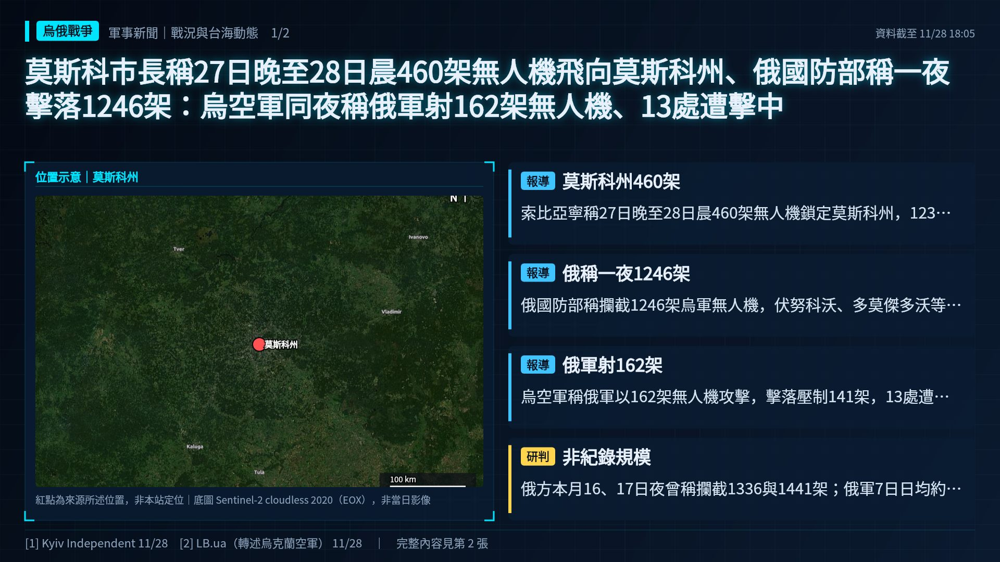

莫斯科市長稱27日晚至28日晨460架無人機飛向莫斯科州、俄國防部稱一夜擊落1246架：烏空軍同夜稱俄軍射162架無人機、13處遭擊中


報導新進展｜俄方稱一夜攔截1246架烏軍無人機，莫斯科州機場限飛
據《基輔獨立報》11月28日報導，莫斯科市長索比亞寧27日晚間約11時稱11架飛往莫斯科的無人機遭擊落，28日早晨再稱當晚共有460架無人機鎖定莫斯科州，其中123架在飛往莫斯科途中被攔截，但未說明全州擊落總數。俄國防部稱27日晚至28日晨共攔截1246架烏克蘭無人機，範圍涵蓋14個俄國地區、巴什科爾托斯坦共和國與克里米亞。伏努科沃、多莫傑多沃兩座莫斯科州機場，以及卡盧加、奔薩、薩拉托夫、唐波夫機場實施飛行限制。報導未提到莫斯科州具體遭擊目標或傷亡；同日羅斯托夫州諾沃沙赫京斯克煉油廠附近傳出火災，但報導未把它與莫斯科州攻擊連結。截至發稿，烏方未就莫斯科州攻擊發表評論。
報導同夜俄軍攻勢｜烏空軍稱162架無人機、74架為噴射動力
烏克蘭空軍稱，俄軍自27日18時起以162架無人機攻擊烏克蘭，包括沙赫德式攻擊無人機與Gerbera、Parodiya誘餌機，其中74架為噴射動力；發射方向為俄國奧廖爾、米勒羅沃、庫爾斯克，被占領的頓涅茨克與克里米亞赫瓦爾傑伊斯克。截至28日8時擊落或壓制141架（含54架噴射沙赫德），13處遭擊中、7處有殘骸墜落；空軍稱空襲仍在進行。報導未列受影響州別與傷亡。這是烏方公布數字，本稿無法獨立核實。
研判研判｜不是紀錄規模，但顯示烏方對莫斯科的長程打擊持續
依《基輔獨立報》引述，俄國防部11月16日夜與17日夜分別稱攔截1336架與1441架，本夜1246架並非本月最高；460架飛向莫斯科州的說法也低於10月底索比亞寧所稱逾600架的規模。值得注意的是，這類全國性擊落數是俄方單方面說法，不能換算成烏方實際發射數或命中數。另一方面，烏空軍公布的俄軍162架、無飛彈，7日日均約140架／枚，仍遠低於60日P95的360；近3天平均143.7架／枚，沒有明顯爬升。澤倫斯基26日警告俄軍將再度大規模空襲能源設施，但截至28日晨的官方數字尚未出現這種規模的攻擊。
待證限制｜俄方數字無法查證，莫斯科州是否有命中不明
本稿沒有直接讀到索比亞寧與俄國防部的Telegram原文，數字依《基輔獨立報》轉述；路透社相關稿件伺服器暫時無法讀取（HTTP 503）。莫斯科州是否有設施遭擊中、有無傷亡，報導未提及，不應推論。烏方空軍數字屬交戰方公布，截稿時攻擊仍在進行，最終統計可能變動。
- [1] Kyiv Independent｜發布 11/28
- [2] LB.ua（轉述烏克蘭空軍）｜發布 11/28